DESIGN
Compositions
Style Guide
...
Graphic Design
...
Social Media
...
Illustrations
...
"Let’s build beautiful, meaningful things together."
yeojin.designer@gmail.com

SCOUT
Vet ER App Design
Scout App navigates pet owners through an emergency situation by helping them locate veterinarians outside of regular hours & improving the intake process for both parties.
TEAM
I collaborated
with 4 of my colleagues
ROLE : DESIGNER
User Research
Style Guide
Wireframe & Prototype
AB Testing
Coding
TOOLS
Sketch
Invision
Illustrator
VS Code
Git hub
USER RESEARCH

Based on our experiences, we discussed about what features could help users in an emergency situation. In order to validate our ideas and gain more insights of users' experiences, we came up with questions we should ask for both interview & survey.
User Stories

“Boots was nearly caught by some cougar out in the wilds of Wyoming five years ago. Took him straight to a nearby vet in town where he became my $800-kitty, and his hind leg was sutured and saved. Close call. Regularly bring neighbors without transport to the vet all times of day and night.”

“Yep, when Monkey was sick and I took him to a standard vet with availability (ran some tests to determine ($350) and then they immediately referred me to an emergency place, where they did more specialized testing (another $2000+) and they kept him and did more testing and blah blah. At the end of everything, it was around $3k for everything.”
Survey

48 Pet Owners Surveyed
Discover how pet owners currently handle emergencies Better understand user needs and wants Gauge interest around new offerings
Major Findings
People do not know how to proceed when unexpected situations arise It is not easy finding 24 hr veterinarian centers
Additional Findings
Top determinants when choosing a veterinarian during an emergency: Availability (85%), Reputation (73%), and Location (58%) 85% surveyed: “Yes, I would be interested in at-home remedies.”
PERSONA

JOURNEY MAP

OUR GOAL
Our goal is to create a mobile app that will navigate pet owners through an emergency situation.
1) helping them locate veterinarians outside of regular hours
2) improving the intake process for both parties.
INFORMATION ARCHITECTURE

WIREFRAME

STYLE GUIDE
Because this is an emergency application, we wanted to use colors that gives a calming and soothing feeling.
In contrast, the addition of an accent color created a sense of urgency.

COLOR BLIND TEST

FINAL PROJECT

OVERVIEW SCREEN
"Create a pet profile"

"Notify vet in an emergency situation"

"I'm not sure if this is an emergency"

GROWTH OPPORTUNITIES
• Calendar with push notifications to help with managing pet medications
• Setting a vet as your primary vet and booking regular appointments
• Incorporating video chat access with a vet tech / vet’s office
• Expanding to livestock
FINAL THOUGHTS
During the design phase, this project made us realize the UX design process is not only about solving problems with the tasks given to users, but also about identifying understandings to what types of relationship people are having with their pets. We noticed how attached people are with their pets and the way people care about their pets was insightful for us to build a caring personality for branding.
A new understanding of teamwork
As everybody thinks differently, they also see things differently.
So as a team, it's really important to let individuals understand what you see and how you think.
At the same time, it is really important to listen to all opinions.
Even if the team is not applying things that someone suggested, it is always better to entertain each idea. This is essential for creating a respectful, productive culture.
When everybody is respected within the team, I notice motivation increases, allowing team members to want to do more for the project they are working on.
This project was a great success due to the simple fact that our teamwork was based on mutual understanding and a fundamental respect of each other's ideas.
Iterate, iterate, iterate
We were constantly iterating to come up with an app experience that would truly fulfill the needs of our user. We were evolving our flows, color schemes, components. It was a constant cycle. It made us realize that no design is perfect, and there is always room for improvement to change and make better experiences for the user.
UT Connect creates a never-ending network cycle for school, alumni & students. It helps UT to receive great support from alumni, allows alumni to engage with school and increase their professional connections. Also, it is a tool for finding career & mentorship opportunities for current students.
TIMELINE
3 Days
TEAM
It was an individual
project
ROLE : DESIGNER
User Research
Style Guide
User Flows
Competitive analysis
Wireframe & Prototype
problems
Alumni are one of schools’ greatest assets. Alumni are the foundation of fundraising, provide great support for sporting and entertainment events, and are critical for student recruitment and promoting the school within the community.
However, staying connected with those alumni has become increasingly difficult. There is a need of a mobile app that helps schools engage with alumni,and to help alumni keep strong bonds with the school.
Initial Questions
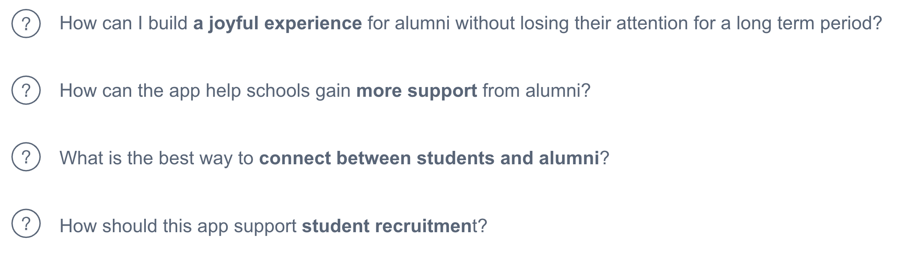
User Survey Insights
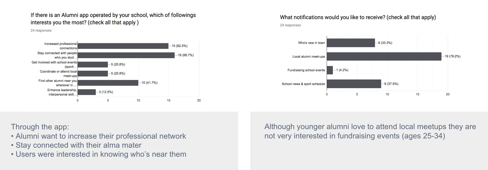
Opportunities
• The app will have a functionality to let users find / communicate with each other to create their own channel of support.
• This app seeks to gain & encourage support for UT. There is a need for users to become more involved in university events.
User Quotes

Opportunities
• Having a functionality to allow users create & attend local meetup will help to create joyful experiences.
• Being able to find mentorship and internship through an app will save a lot of time for school staffs and students.
How Everyone Can Win
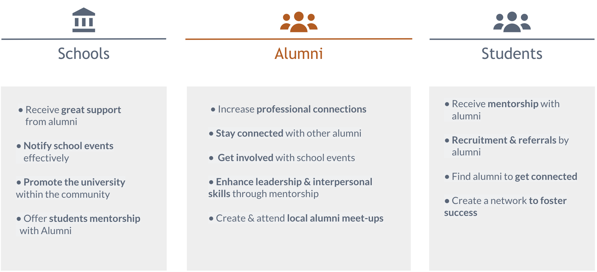
UT Connect Strategy
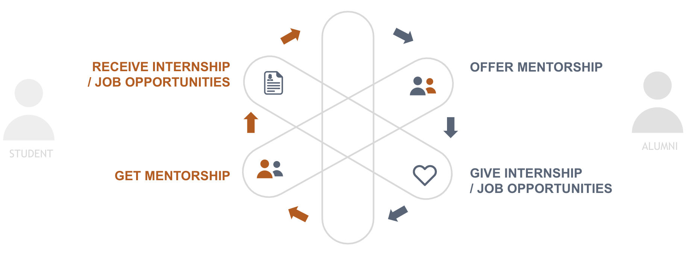
Creating a new culture
Hypothesis: If students are provided a network to obtain career experience through the alumni channel (i.e mentorships & internships), they will be more inclined to assist future students. Additionally, it will perpetuate the value of the app throughout their education and well after.
The UT Connect experience will create a sense of community for every cohort.
Information Architecture
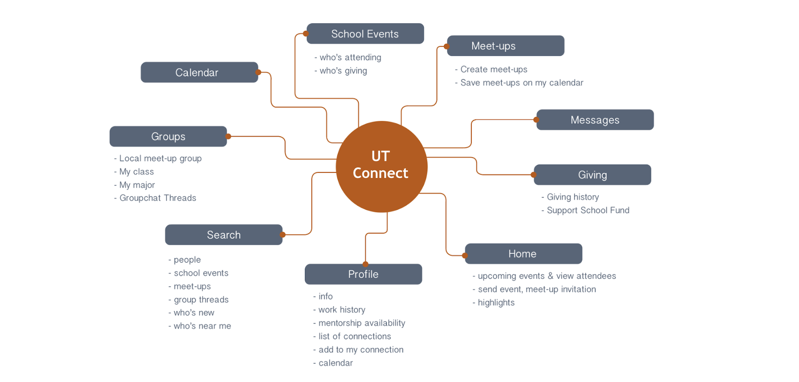
Competitive analysis
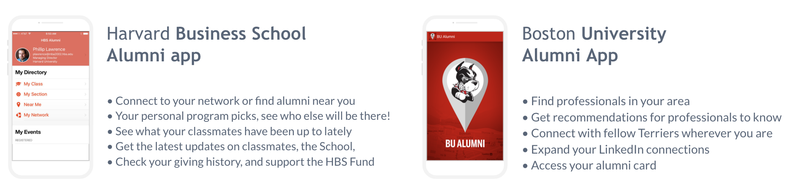
Weakness
Although both apps have the functionality that the schools want to offer, there is a lack of meaningful experience for the audience to enjoy. As a result, they will more likely lose attention from the users in a short time.
* Understanding the true user needs is the only way to build a successful app with an emotional impact on users.
Wireframe
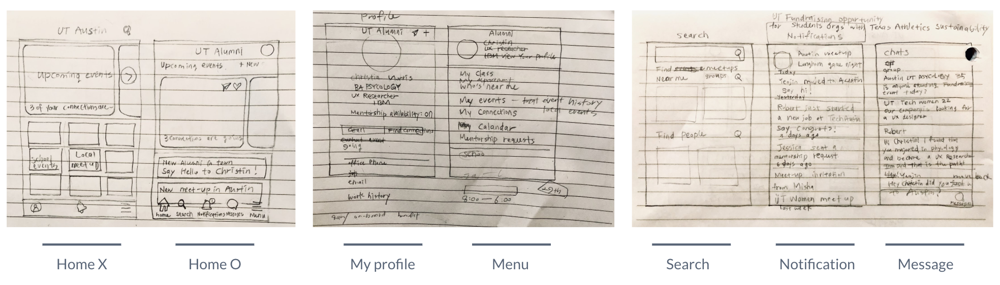
High-Fidelity
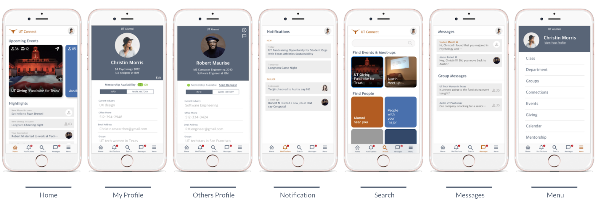
Design Process
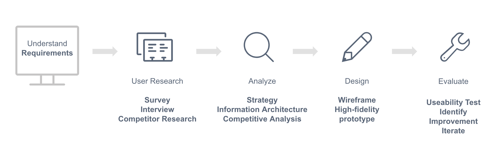
FOOD VIBE
Restaurant App Design
Food vibe is a mobile app recommending great places to dine that allows food enthusiasts to get a true feel for restaurants.
It shows visual vibes of the restaurants by users’ photos and hashtags with needed info each restaurant provides.
TEAM
I collaborated
with 3 of my colleagues
ROLE : DESIGNER
User Research
Story Board
Style Guide
User Flows
Wireframe & Prototype
User Testing
TOOLS
Sketch
Invision
Illustrator
Photoshop
USER RESEARCH
Interviews
After food and service, VIBE (ambiance) is the most important part of the dining experience.
When describing VIBE, our interviewees were thinking of: inter decor, lightning, sound, noise, cleanliness, crowd, layout, food presentation and taste.
People would like to know in advance the DETAILS of the place e.g.- what’s the waiting time or if this place is suitable for a business meeting.
• Better quality images- We eat with our eyes
• Visual representation of the place
• Easily reachable menu
• More accurate filters (-> hashtags)
• Helpful feedback rather than random suggestions

PERSONA

USER SCENARIO

USER RESEARCH
Surveys
Almost 90% of the respondents will be potentially interested in using the app with mood boards of the restaurants.
Almost three-quarters of the respondents will be somewhat interested in creating mood boards themselves.
Only 20% of the people who filled our survey have never been disappointed with a restaurant choice based upon Yelp.
Three quarters of the group consider photos as the most helpful feature when choosing a place to eat/drink.
Almost 100% of the respondents check the menu before going to the restaurant ( always or sometimes).

Primary Goals
Look at the Menu
Look at Visuals
Provide Feedback
Secondary Goals
Get Directions
Book a Table
Video Room Tour
User Prefers
Visuals not summaries
Recommendations not random
Provide feedback not reviews
JOURNEY MAP
• The menus are not on each restaurant’s website, and when they are, it’s often difficult to find them.
• Misleading (outdated) pictures and descriptions
• Difficulty to find a place convenient for people with different food restrictions
• Waiting time- definitely too long for a lunch break
• No bar- lack of information in advance
• Noise level
• Disappointment with bad experience caused by difference between description and the actual place
• Bonuses/ Goodies
• User feedback

PROBLEM STATEMENT

USER FLOW

INFORMATION ACHITECTURE
After User Research

ITERATION
Major Revisions
Surveys/Reviews | Login Process Randomizer | Hashtag Functionality | Rating System Prioritized Goals | Badging System | Incentive Program

STYLE GUIDE

USER FLOW

OVERVIEW SCREEN

FINAL THOUGHTS
This was an exciting passion project that allowed our team to explore each step of the UX process in depth. With that being said, we learned a lot of lessons from both our successes and mistakes.
User research is KEY
Our four team members came up with a variety of features and ideas based on our own experiences and insights. After the initial interviewing phase, we narrowed our focus to feature core principles that would help with problem solving, we then iterated alongside each team members’ feedback and user testing. Our confidence enabled us to go forward with building the app. We continued to learn throughout usability testing and we were able to gather invaluable insights about the strengths and weaknesses of the product. These insights were incredibly helpful in determining priorities in terms of product enhancements, feature requests and general design upgrades. These were just consistant reminders how important user research is.
Fail fast
It was a very humbling experience to realize the mistakes we made, and learning to let go of our earlier designs. We realized that scrapping flows, testing, and failing fast is much better than investing longer in ideas that might have to quickly fly out the window.
Website Redesign
This is a project of rebranding EBQ & TechVAR's websites by transforming their UX and visual systems. The goal was to add effective visual hierarchies and utilize more CTAs that align with their branding and purpose.
TEAM
I collaborated
with
marketing & Sales team
ROLE : DESIGNER
UX Design
UI Design
Illustrations
Wireframe & Prototype
AB Testing
TOOLS
Adobe XD
Illustrator
Photoshop
EBQ
www.ebq.comNew
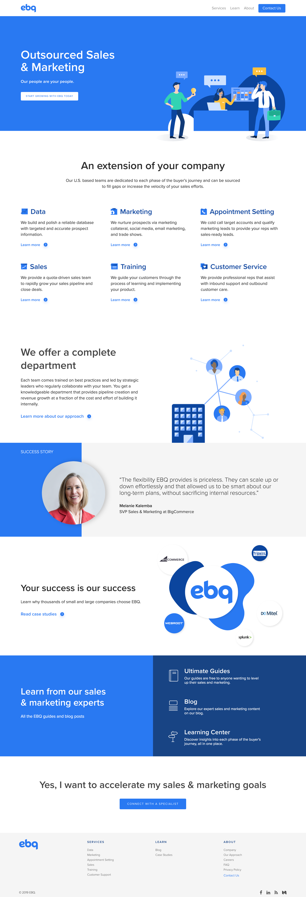
Old

TechVAR
www.techVAR.comNew
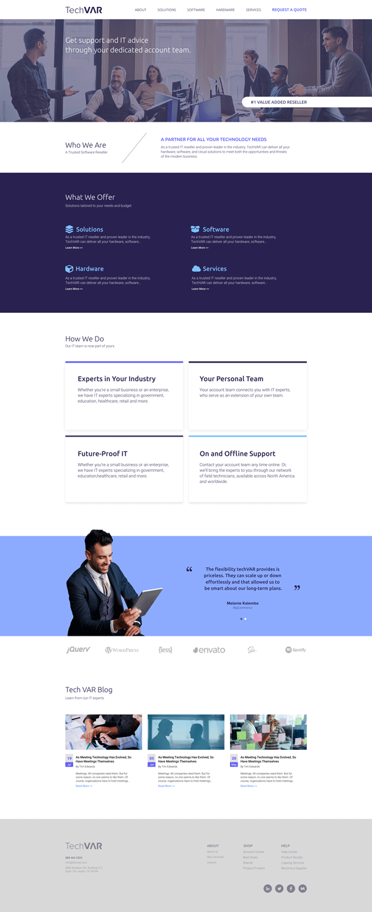
Old
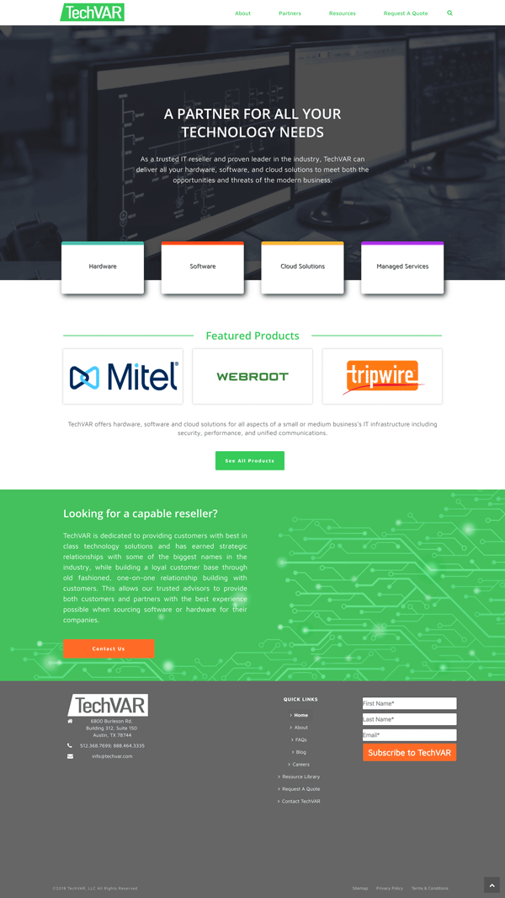
GRAPHIC DESIGN
TechVAR PDF Design
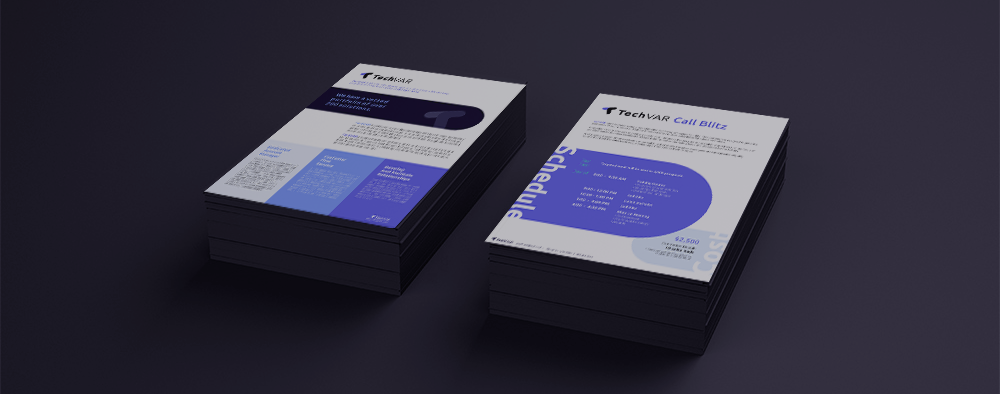
EBQ PDF Design
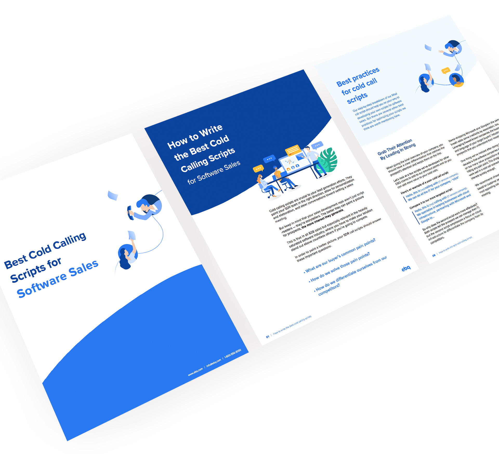
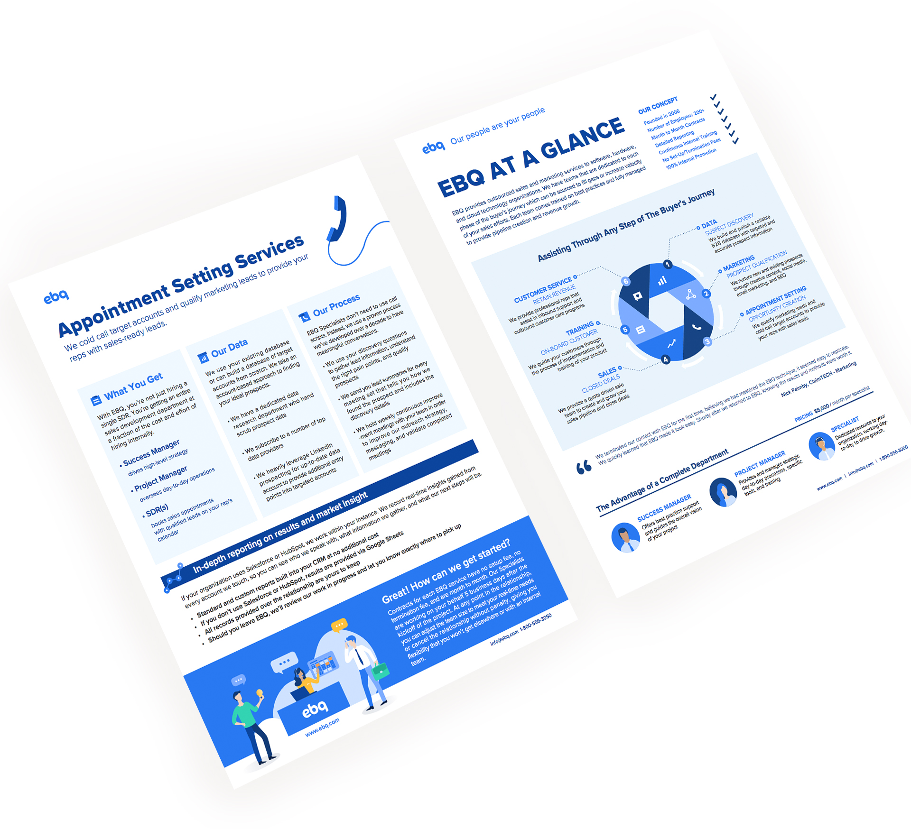
Product Description
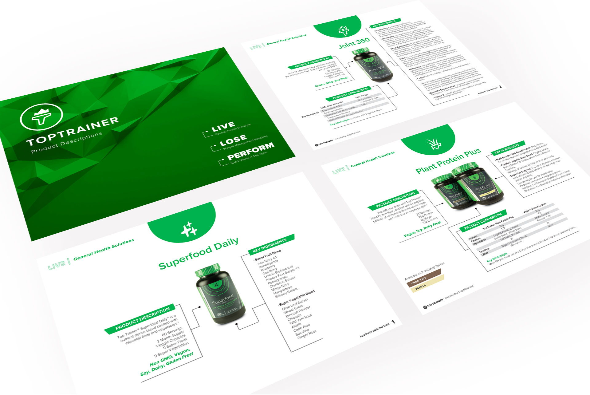
Product Catalog
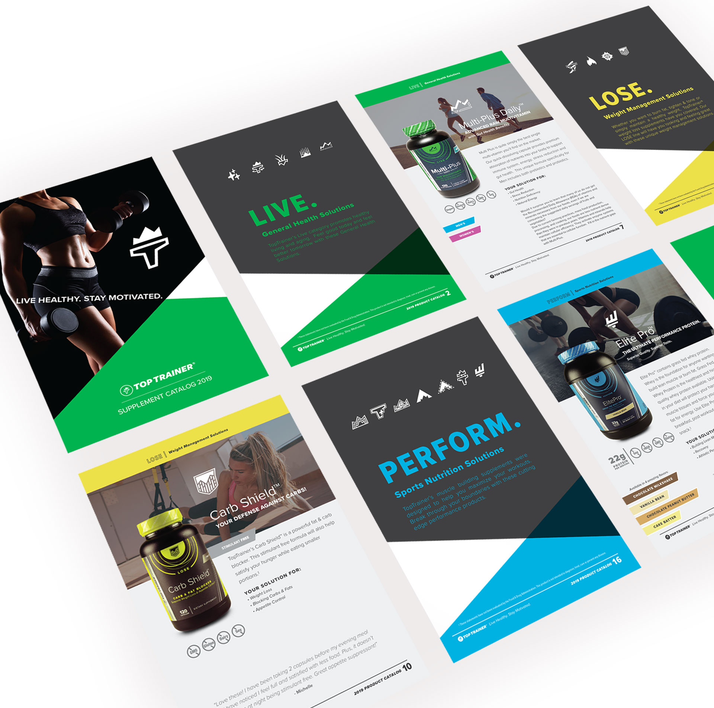
Product Logo Design


Social Media
Linkedin ADs

Two Way Communication

Product Advertisements


Photography


Style Guide
TechVAR
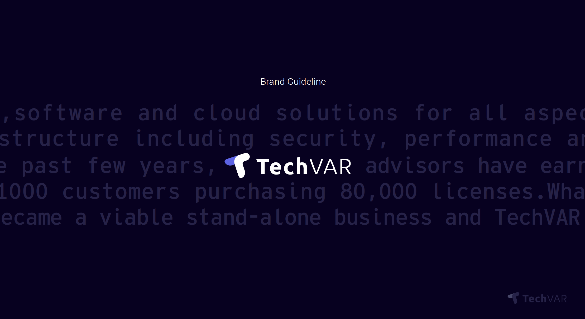 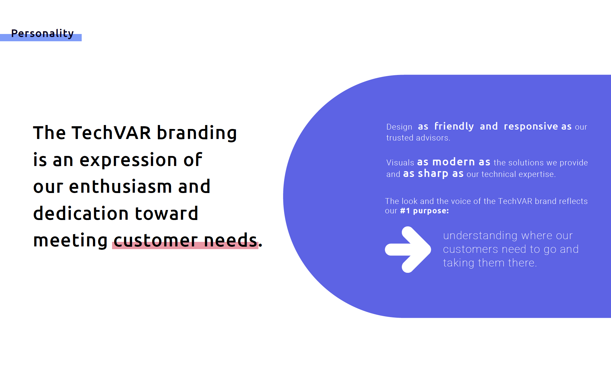 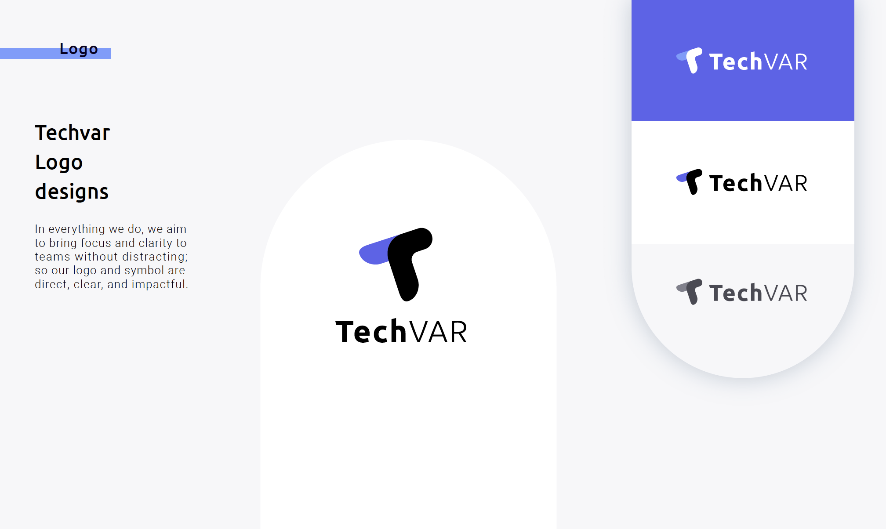 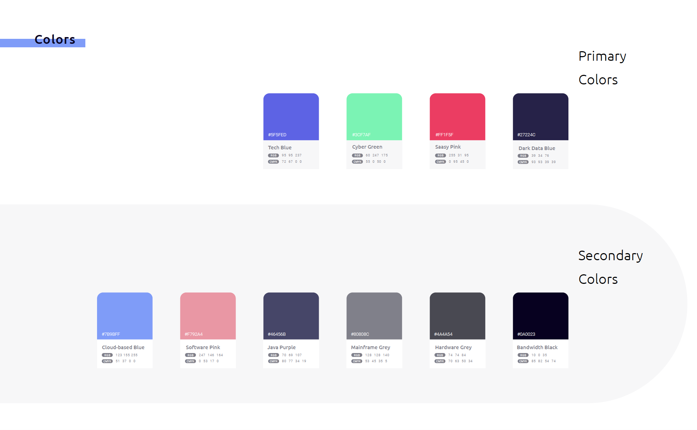 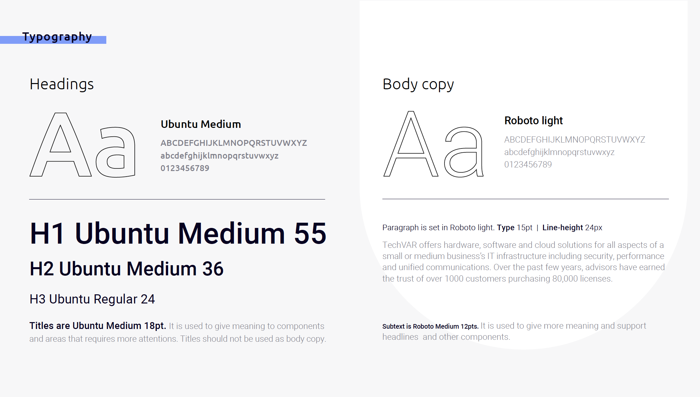
Scout
Food Vibe
illustrations
Blog Header
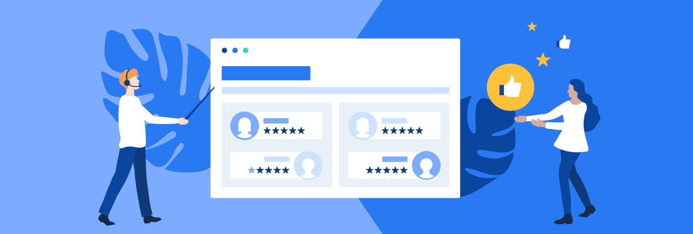
How to Increase Sales Revenue with Customer Service
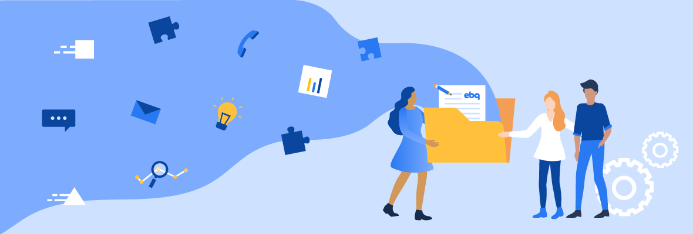
Best Cold Calling Scripts for Software Sales
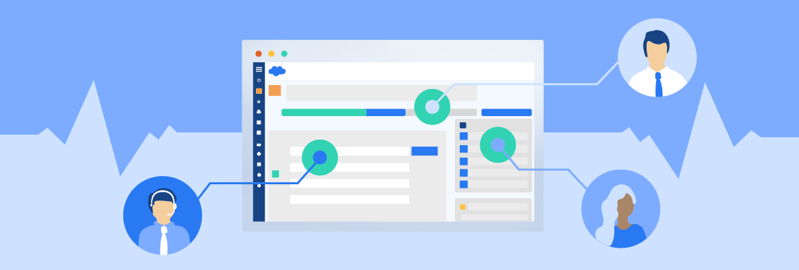
Should Organizations Outsource Their Salesforce Administration?
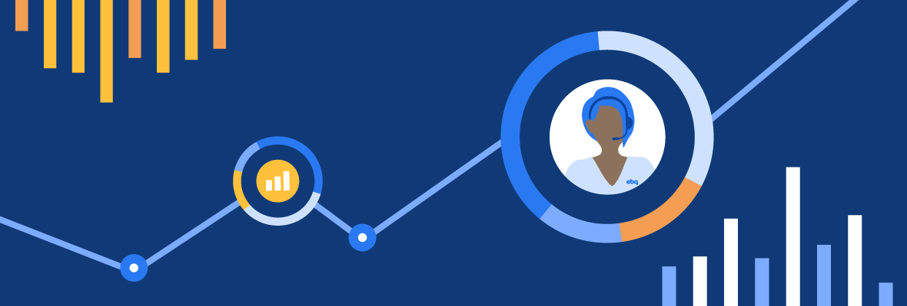
SDR Metrics That Will Make Your Team Successful
10 Components of a Well-Defined B2B Buyer Persona
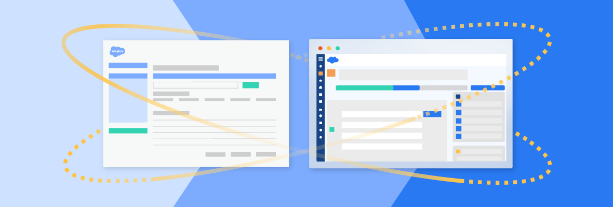
Salesforce Lightning Migration Guide
Illustrations